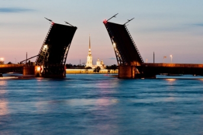

Путеводитель. Санкт-Петербург
• Страна: Россия
• Регион: Северо-Западный федеральный округ
• Население: Около 5.6 миллионов человек (2024 г.)
• Язык: Русский
• Валюта: Российский рубль (₽)
• Часовой пояс: Московское время (MSK, UTC+3)
• Климат: Умеренный, переходный от морского к континентальному.
Спутниковая карта Санкт-Петербурга — Яндекс Карты
Санкт-Петербург, названный в честь святого Петра – небесного покровителя царя, основан 27 мая 1703. Территорией строительства города выбрали северо-запад страны, устье реки Невы, побережье Финского залива. Благодаря географическому положению, Петербург был легко защищен от врагов, поэтому послужил важным центром торговли. Новому городу Петр I придавал стратегическое значение обеспечения водного пути Россия-Западная Европа. Санкт-Петербург стал символом мощи и развития Российской Империи. Именно здесь проходили главные события, значимые для страны. В августе 1914 года город переименовали в Петроград. Позднее, в 1924, Петроград переименовали в Ленинград. Важной эпохой жизни Ленинграда является период блокады во время Великой Отечественной войны, именно тогда проявились героизм, стойкость русского народа. В 1991 вернулось историческое имя Санкт-Петербург, однако многие заведения, парки, различные организации продолжают называться ленинградскими.
О Санкт-Петербурге - Историческая справка

Фото достопримечательностей Санкт-Петербурга (3825 фото) в хорошем качестве
Исаакиевский собор Самый крупный собор Петербурга строился на протяжении 40 лет. Современное здание — четвертое по счету, построенное в духе позднего классицизма по проекту архитектора Огюста Монферрана. Возведен в честь преподобного Исаакия Далматского. Собор украшают более 350 скульптур, посвященных Христу. | |
Казанский собор Посвящен подвигам российской армии в Отечественной войне 1812 года. Возле собора - бронзовые скульптуры, посвященные Михаилу Кутузову и Михаилу Барклаю-де-Толли, в самом храме захоронен прах Кутузова. В 1813-14 годах в соборе хранились французские трофеи. В храме находится православная святыня — икона Казанской Божией матери. | |
Храм Спаса на Крови Церковь построена на месте смертельного покушения на императора Александра II. Архитектор - Альфред Парланд. Храм построен в «русском стиле» и напоминает московский собор Василия Блаженного. Внутри собор отделан мозаикой, на стенах и потолке изображены 68 сюжетов из Библии и Евангелия. | |
Мариинский театр Главный музыкальный театр Петербурга славится великолепными постановками мирового уровня. Сюда приходят, чтобы послушать оперу, посмотреть балет и ощутить атмосферу праздника. Театр был построен в 1848 году и назван в честь супруги Александра II Марии Александровны. Архитектор здания — Альберт Кавос. | |
Петропавловская крепость Оборонительное сооружение было построено на Заячьем острове в 1703 году, но не участвовало в военных действиях. Долгое время крепость использовалась как тюрьма. Внутри крепости расположен Петропавловский собор, в котором захоронены цари и их родственники Романовы. Сегодня в крепости размещается государственный музей истории Санкт-Петербурга. | |
Русский музей Второй по значимости музей города, где представлено крупнейшее собрание российского искусства в мире — от древнерусских икон до советского и новейшего искусства. Всего в фондах около 400 тысяч экспонатов. |
Державный град, возвышайся над Невою,
Как дивный храм, ты сердцам открыт!
Сияй в веках красотой живою,
Дыханье твое Медный всадник хранит.
Несокрушим — ты смог в года лихие
Преодолеть все бури и ветра!
С морской душой,
Бессмертен, как Россия,
Плыви, фрегат, под парусом Петра!
Санкт‑Петербург, оставайся вечно молод!
Грядущий день озарен тобой.
Так расцветай, наш прекрасный город!
Высокая честь — жить единой судьбой!
Гимн Санкт Петербурга - смотреть онлайн в поиске Яндекса по Видео
Видео-экскурсия по Санкт-Петербургу - смотреть онлайн в поиске Яндекса по Видео